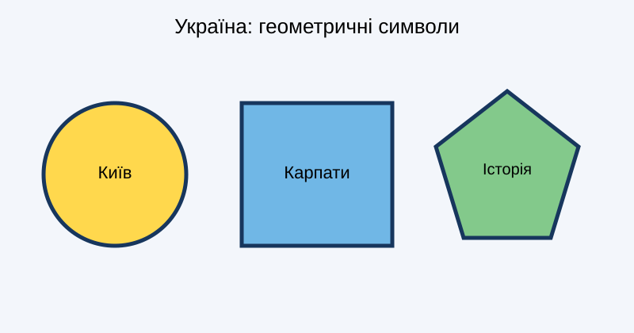

Натисніть на одну з фігур, щоб перейти до відповідної інформації.

Київ — столиця України, культурний та історичний центр держави.
Карпати — гірська система на заході України, відома мальовничою природою.
Україна має багату історію, традиції та культурну спадщину.
До сторінки «Моя Батьківщина»